Booklings
Reading tracker · UX/UI, research & prototype
A reading tracker I would actually keep using
I read a lot and I run a book club with friends, so I have tried to keep track of what I read. Goodreads is where everyone ends up, and its interface feels a decade behind the reading itself. The apps that look more modern borrow their motivation from productivity software instead: streaks that break, counters that shame, rankings that compare. Booklings is my attempt at the opposite, a tracker that is cozy to open and uses gamification as an invitation to log a book rather than as pressure to perform.
Role
UX/UI design
Type
Concept idea
Tools
Figma · HTML/CSS prototype
Read time
6 minutes
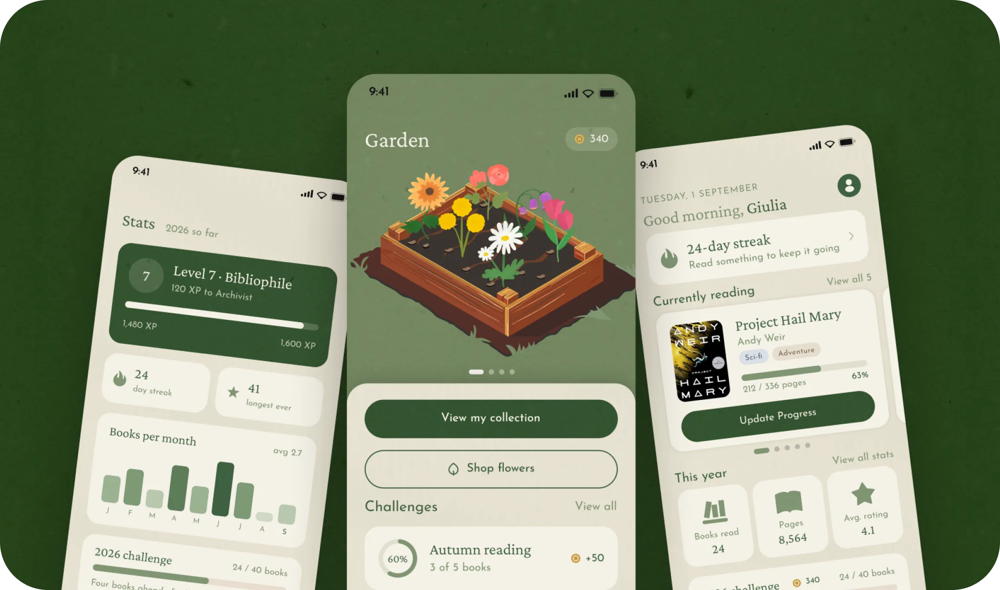
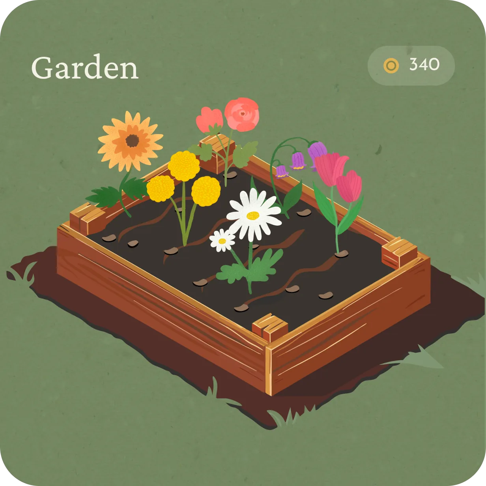
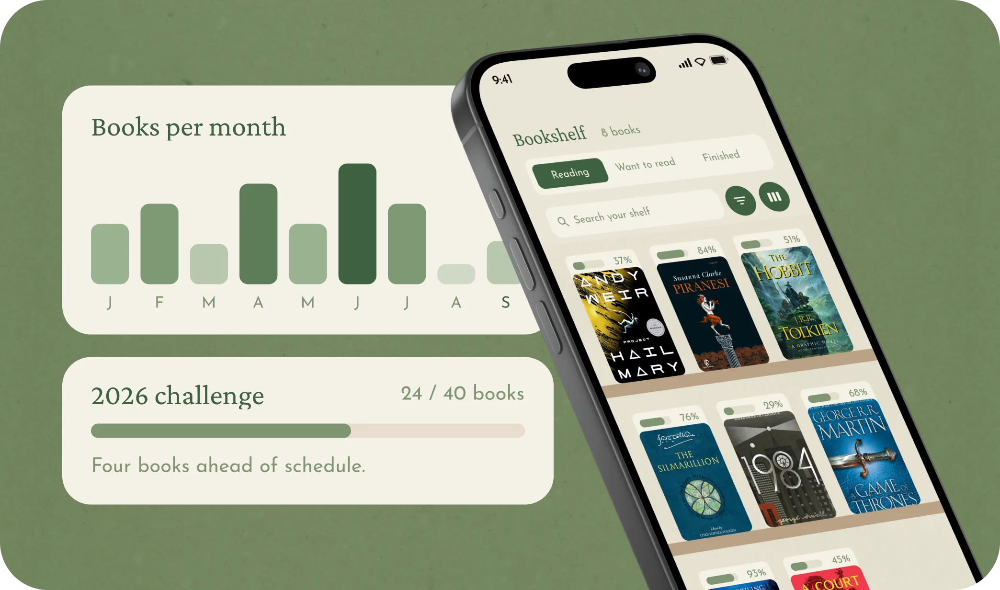
Empathize
Everyone I read with has a tracker they stopped opening
It is not a problem of wanting to read. In my book club the books get bought and started; what falls away is the habit of recording them, and with it the sense of how much you actually read in a year. The numbers say the same thing at a larger scale: participation has barely moved in a decade, while the volume each reader gets through has fallen to its lowest measured level.
{{ s.figure }}
{{ s.body }}
{{ s.source }}
The place I do find that kind of steady, unpressured progress is in cozy games: low stakes, gentle growth, no fail state. Reading already belongs to that world. The software built around it does not, so that is where I started.
The opening
Reading is already the cozy activity. The software that tracks it is not.
Research
A streak motivates until the day it breaks
Streaks are the default motivation mechanic in habit software, and they have a well-documented failure mode: once a run is long enough to feel valuable, missing a single day makes people abandon the habit rather than restart from zero. That finding shaped most of what follows.
The evidence
- Streaks shift from motivator to obligation as they lengthen. The longer the run, the worse breaking it feels.
- When the streak goes, the habit often goes with it: people quit outright rather than tapering.
- Duolingo's Streak Freeze cut churn by relieving anxiety, not by adding pressure.
What it changed in the design
- The garden, not the streak, is the main progress surface: a flower you planted stays planted.
- Nothing in the app resets to zero. Coins are earned and never expire; beds persist season to season.
- No leaderboards and no friend comparison anywhere in the IA.
- The streak card is a doorway to the garden, not a scoreboard. It invites, it does not warn.
Competitive landscape
Everyone bets on data or on people. Nobody bets on warmth.
The category splits between products that optimise for data and products that optimise for people. Where they converge is gamification: nearly all of them borrow streaks and badges from productivity apps. That leaves the warm, low-pressure position open.
Define
Who this is for
{{ p.label }}
{{ p.who }}
{{ p.quote }}
Wants
{{ p.wants }}
Bounces off
{{ p.off }}
What the product does
{{ p.does }}
Design principles
The rules, and where you can see each one
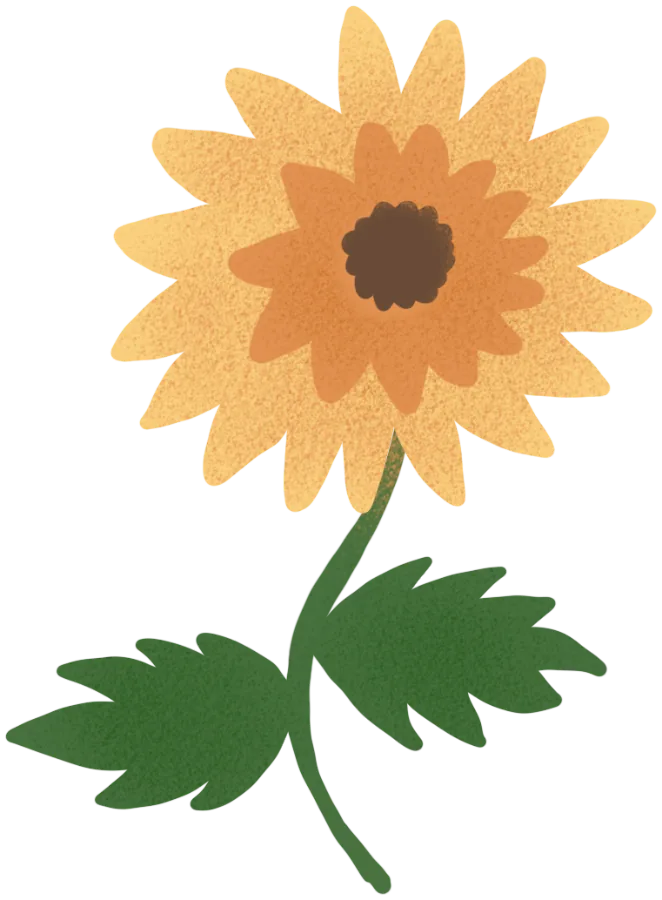
Progress accumulates, never resets
A flower you planted stays planted; coins never expire. Stopping for three weeks costs you nothing.
Garden · Home streak card
Compare yourself to no one
No leaderboards, no friend feed, no social ranking anywhere in the structure. The only comparison offered is to your own previous months.
Stats · Books per month
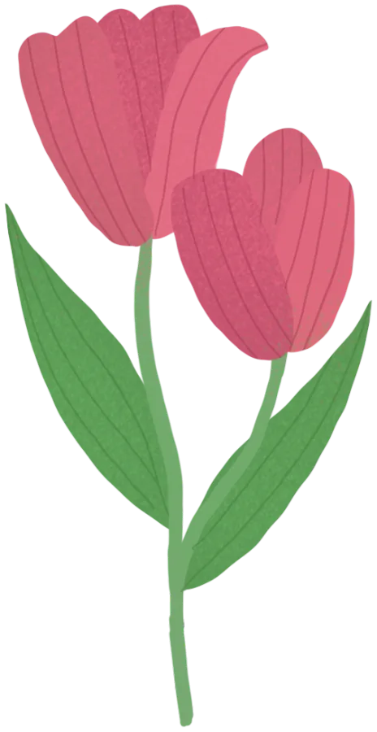
Let mood pick the book
Discovery is emotional, not algorithmic: a wrapped blind pick with a handful of hints, or a quiz about how you feel tonight.
Blind pick · Mood quiz
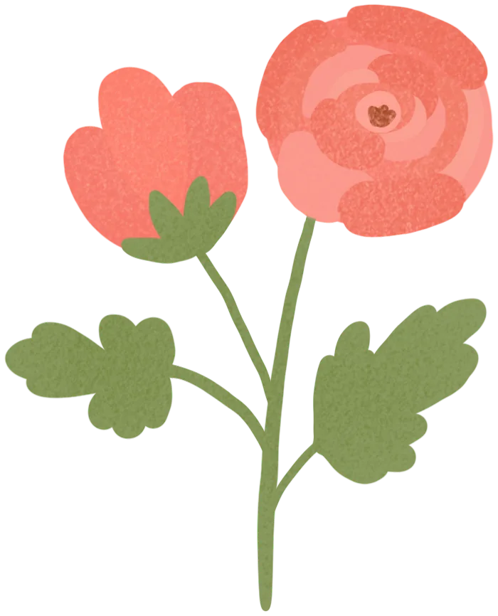
Warmth is structural
Sage and cream, a serif for every title, hand-drawn flowers and real covers. The comfort is in the system, not applied as decoration.
Every screen
Ideate
Every mechanic has a brake
The loop
Read → log pages → XP and coins → a level, or a new seed → the garden visibly changes → a reason to open the app tomorrow that isn't a number about to reset.
Prototype
A structure where one destination is a verb
A row of tabs plus a raised centre action. The + is not a screen but a sheet, and it branches into every way a book can enter the library, with discovery sitting alongside search rather than buried under it.
Booklings
▼
▼
▼
▼
▼
Home
Currently reading carousel
↳ Update progress sheet
↳ Mark as finished → XP
Stats
Streak
Challenges
Bookshelf
Reading / TBR / Finished
Search, sort, density
Drag to reorder
Drag to DNF bin
↳ Book detail
+ Add
Search a book
Scan ISBN
Add manually
Start a session
Find my next read
↳ Blind pick
↳ Mood quiz
Garden
View my collection
Shop flowers → Shop
↳ Buy seed → plant
Profile
Statistics
My Ranking
My Taste
Challenges
Badges, earned + locked
The flows, screen by screen
Each flow as static screens first, then the same flow running in the prototype.
Update progress
From Home, the currently-reading card opens a sheet with the page count. Saving moves the XP bar straight away, and marking the book finished is the same sheet’s second option, so the daily action and the reward sit one tap apart.
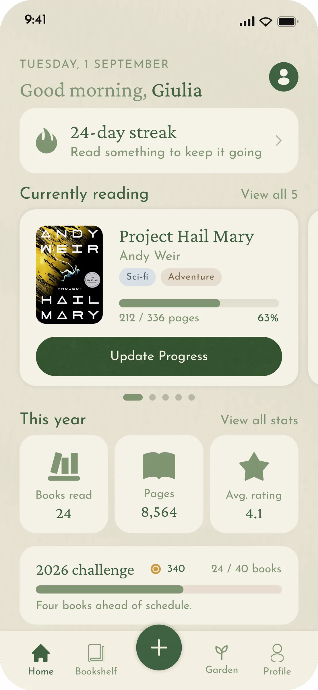
Home: streak, currently reading and this year in three numbers
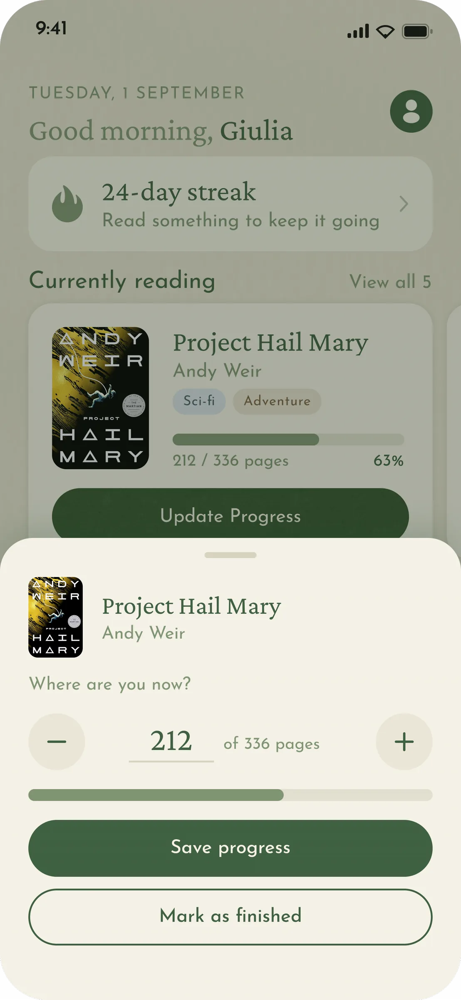
Update progress: page count, save, or mark as finished
Finish a book
From the shelf to the book detail, where Mark as finished is the primary action. The confirmation names what the reader just completed and shows the weekly challenge closing with it, then the detail settles into its finished state with the rating.
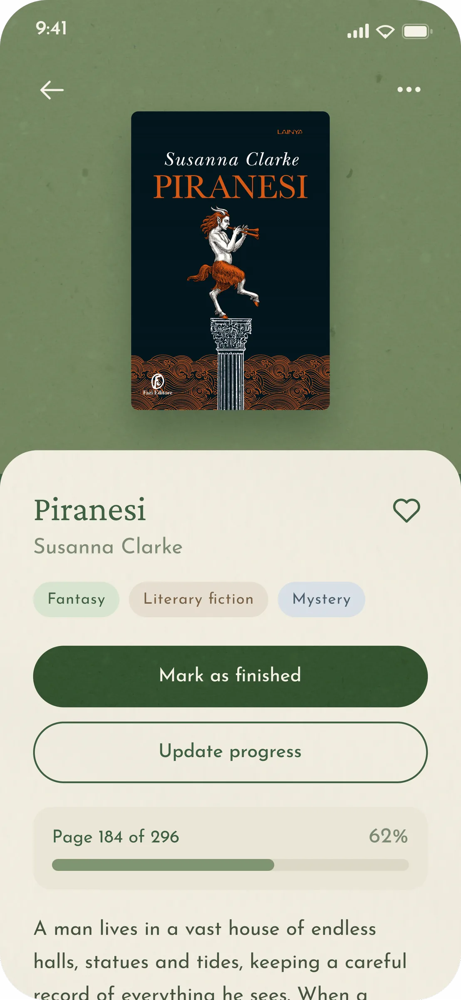
Book detail: Mark as finished is the primary action
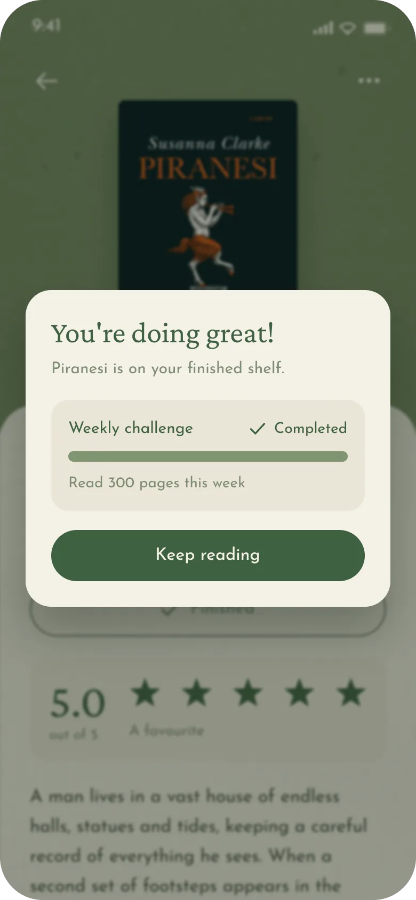
Confirmation: the weekly challenge closes with it
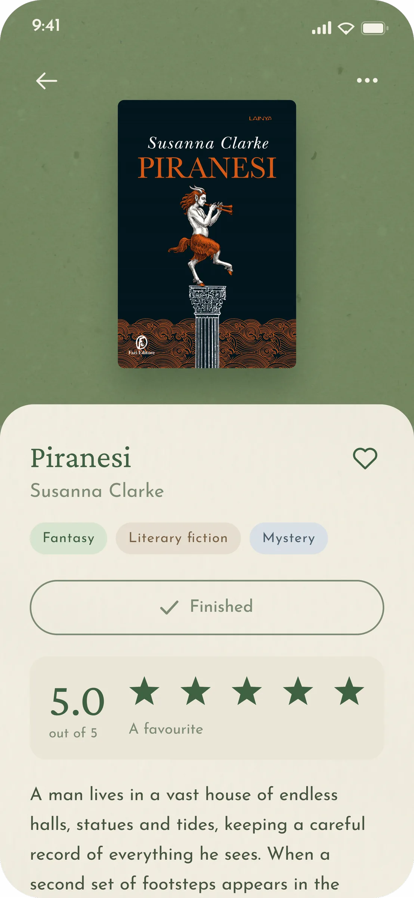
Finished state, with the rating in place
Plant a flower
Shop flowers opens from the Garden, where every seed is priced in coins and tied to a genre. Buying is a single sheet, and the confirmation shows the seed already in the bed rather than a receipt.
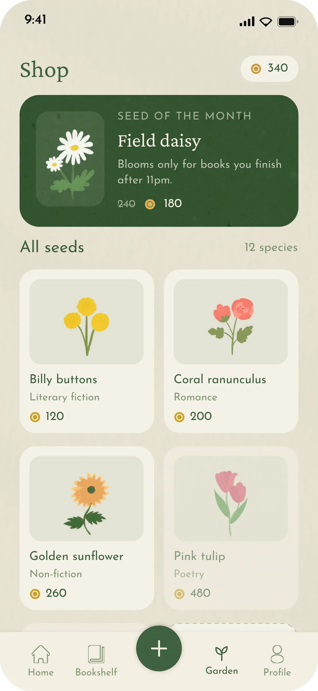
Shop: seed of the month and every species
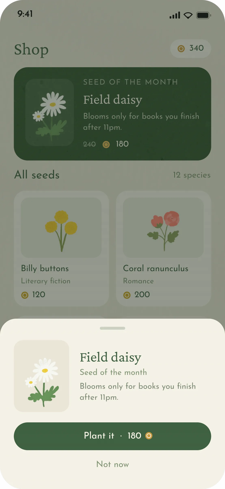
Buy sheet: one price, one action
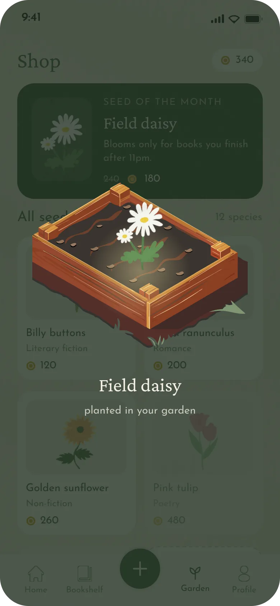
The seed lands in the bed, not in a receipt
Blind pick and mood quiz
Find my next read splits in two: a wrapped book revealed only once you accept it, or three questions about right now that end in a single suggestion with the reasons it was picked.
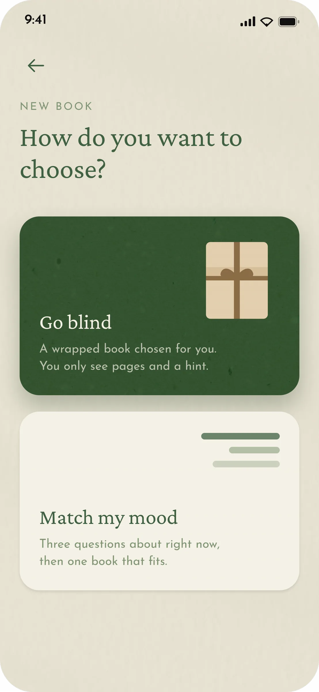
Find my next read: go blind, or match my mood
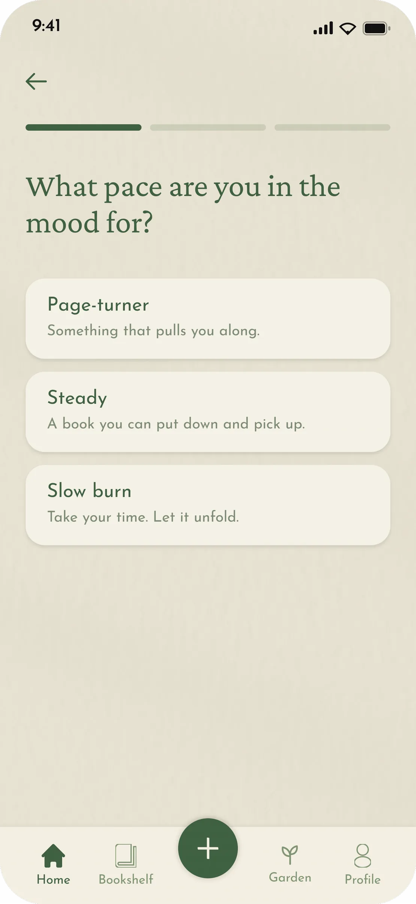
Mood quiz: pace, then two more questions
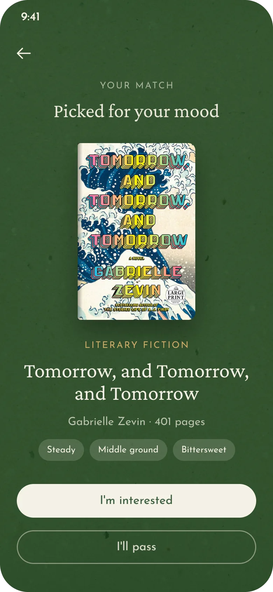
The match, with the reasons it was picked
Final design
Every flower in the garden is drawn by hand
A short palette and two typefaces carry the whole product. Ink green for text and the deepest surfaces, sage for the accents and the garden, card and paper for everything underneath, a range narrow enough that nothing ever shouts. Crimson Pro sets the titles, giving book covers and screen headings the same literary weight; Josefin Sans handles the interface, geometric and rounded enough to stay soft at small sizes.
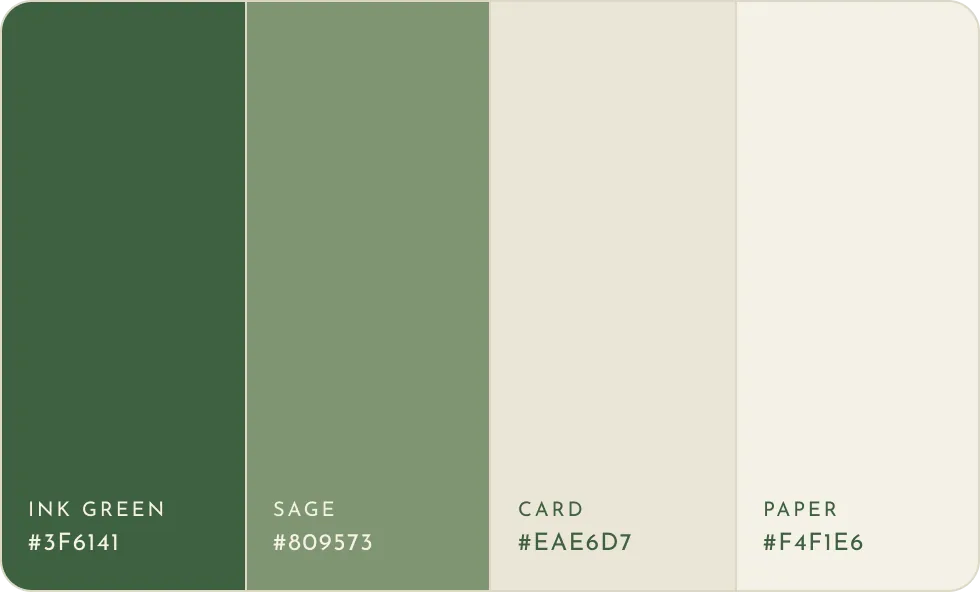
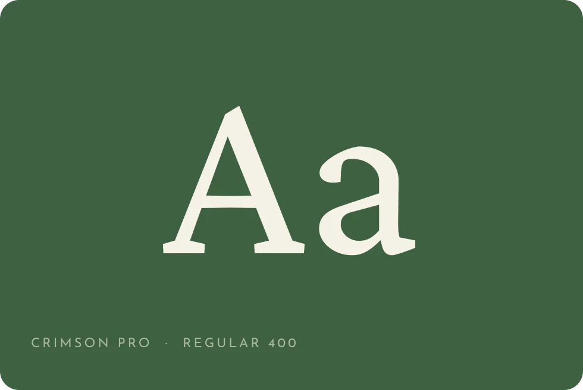
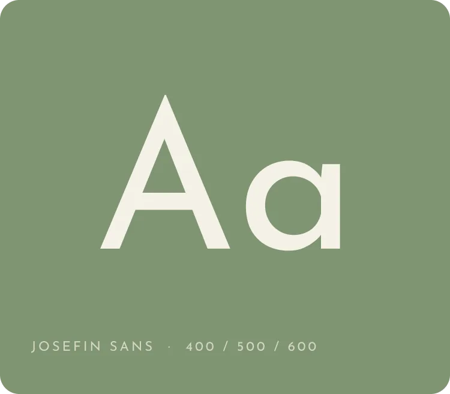
Warmth is structural, so the illustration cannot be borrowed. Each plant, bed and shop item was drawn for the app: sage and cream, soft edges, no stock assets.
Takeaways
What I kept, what I cut, what comes next
The hardest part was not drawing the flowers or building the screens: it was deciding which mechanics earned their place. Almost everything on the gamification menu works in the short term, so each mechanic I kept had to answer one question: does this make someone want to log a book, or only anxious about not having logged one? Streaks, leaderboards and time-limited badges came out. XP, coins, the yearly challenge and the garden stayed, each with a constraint written next to it.
Without a client, nobody was going to tell me the scope was too big. Cutting the social layer was the clearest case: it is the feature my own book club would use first, and still the biggest open question. Relatedness is the need this version deliberately does not serve, and I would rather name that gap than half-build it.
Next steps, in order: test the prototype with my book club and a few readers outside it, to see whether removing the streak keeps people logging or just removes a motivator some of them wanted. Then the first days, which this case study skips: an empty shelf, no coins, no flowers, and making that feel like a beginning rather than a blank page. Then the social layer, built so it never turns into a ranking. And a garden with more than one bed: seasons, collections, flowers that only appear under certain conditions.